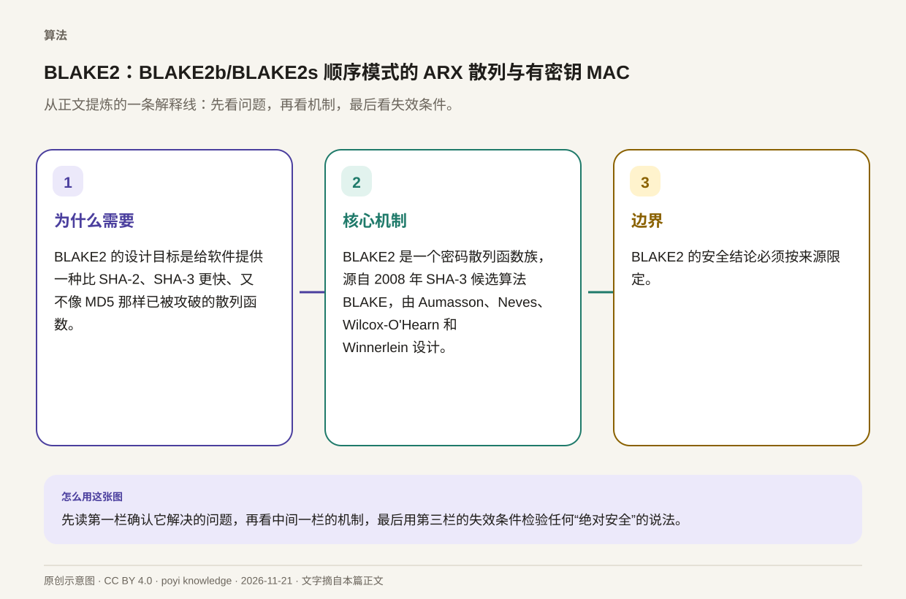
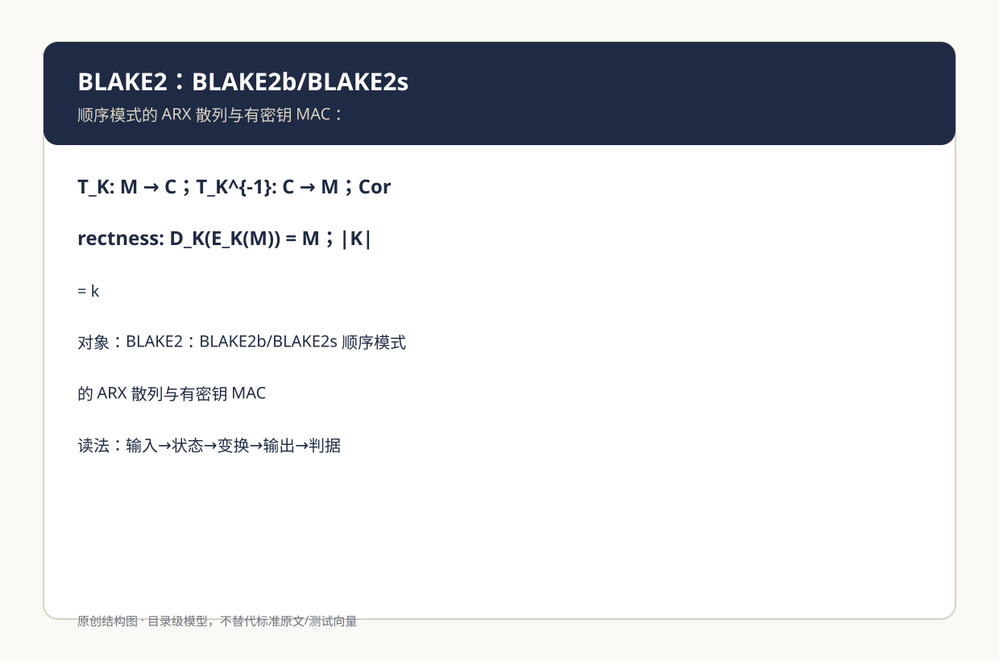

原理与机制
算法：BLAKE2 散列（BLAKE2）。BLAKE2 是一个密码散列函数族，源自 2008 年 SHA-3 候选算法 BLAKE，由 Aumasson、Neves、Wilcox-O'Hearn 和 Winnerlein 设计。它有两种基本变体：BLAKE2b 面向 64 位平台，BLAKE2s 面向 8 到 32 位平台。两者的结构相同，只是字长、轮数、块大小和参数范围不同。| 参数 | BLAKE2b | BLAKE2s | | --- | --- | --- | | 字长 w | 64 位 | 32 位 | | 压缩轮数 r | 12 | 10 | | 块字节 bb | 128 | 64 | | 摘要字节 nn | 1 到 64 | 1 到 32 | | 密钥字节 kk | 0 到 64 | 0 到 32 | | 输入字节 ll | 小于 2^128 | 小于 2^64 | | G 的旋转常量 (R1,R2,R3,R4) | (32,24,16,63) | (16,12,8,7) |
散列的内部状态是 8 个字 h[0..7]。初始值 IV 由素数平方根的小数部分定义：IV[i] = floor(2^w * frac(sqrt(prime(i+1))))，其中 prime(i) 是第 i 个素数 2、3、5、7、11、13、17、19。BLAKE2b 的 IV 与 SHA-512 的 IV 相同，BLAKE2s 的 IV 与 SHA-256 的 IV 相同。所有输入、密钥和输出都按小端序解释：字节流从低地址开始填入字的低位。参数块只有一个字参与 RFC 7693 的顺序模式：
p[0] = 0x0101kknn p[1..7] = 0
h[0] = IV[0] XOR p[0]
其中 nn 是摘要字节数，kk 是密钥字节数；kk=0 表示无密钥散列。参数块把摘要长度和密钥长度直接绑进初始状态，因此同一段消息用不同输出长度或不同密钥长度计算，得到的是不同的函数，而不是同一摘要的前缀。压缩函数 F 接收状态 h、一个 16 字消息块 m、字节计数器 t 和最后一块标志 f：
v[0..7] = h[0..7]
v[8..15] = IV[0..7]
v[12] ^= (t mod 2^w)
v[13] ^= (t >> w)
if f = true: v[14] ^= 0xFF..FF
repeat r rounds:
s = SIGMA[round mod 10]
G(v, 0, 4, 8, 12, m[s[0]], m[s[1]])
G(v, 1, 5, 9, 13, m[s[2]], m[s[3]])
G(v, 2, 6, 10, 14, m[s[4]], m[s[5]])
G(v, 3, 7, 11, 15, m[s[6]], m[s[7]])
G(v, 0, 5, 10, 15, m[s[8]], m[s[9]])
G(v, 1, 6, 11, 12, m[s[10]], m[s[11]])
G(v, 2, 7, 8, 13, m[s[12]], m[s[13]])
G(v, 3, 4, 9, 14, m[s[14]], m[s[15]])
h[i] ^= v[i] ^ v[i+8] i = 0..7
G 是 BLAKE 的混合原语，每个 G 做两次加—异或—旋转的循环：
v[a] = (v[a] + v[b] + x) mod 2^w
v[d] = (v[d] XOR v[a]) >>> R1
v[c] = (v[c] + v[d]) mod 2^w
v[b] = (v[b] XOR v[c]) >>> R2
v[a] = (v[a] + v[b] + y) mod 2^w
v[d] = (v[d] XOR v[a]) >>> R3
v[c] = (v[c] + v[d]) mod 2^w
v[b] = (v[b] XOR v[c]) >>> R4
>>> 是循环右移。BLAKE2b 使用 (32,24,16,63)，BLAKE2s 使用 (16,12,8,7)。这些旋转选择来自对常见处理器的优化：24 位旋转可以用 SSSE3 的 pshufb 一条指令完成，63 位旋转等价于左旋 1 位。消息调度由 10 个置换 SIGMA[0..9] 定义，每一行是 0 到 15 的一个排列：
SIGMA[0] = 0 1 2 3 4 5 6 7 8 9 10 11 12 13 14 15
SIGMA[1] = 14 10 4 8 9 15 13 6 1 12 0 2 11 7 5 3
SIGMA[2] = 11 8 12 0 5 2 15 13 10 14 3 6 7 1 9 4
SIGMA[3] = 7 9 3 1 13 12 11 14 2 6 5 10 4 0 15 8
SIGMA[4] = 9 0 5 7 2 4 10 15 14 1 11 12 6 8 3 13
SIGMA[5] = 2 12 6 10 0 11 8 3 4 13 7 5 15 14 1 9
SIGMA[6] = 12 5 1 15 14 13 4 10 0 7 6 3 9 2 8 11
SIGMA[7] = 13 11 7 14 12 1 3 9 5 0 15 4 8 6 2 10
SIGMA[8] = 6 15 14 9 11 3 0 8 12 2 13 7 1 4 10 5
SIGMA[9] = 10 2 8 4 7 6 1 5 15 11 9 14 3 12 13 0
BLAKE2b 有 12 轮，第 10、11 轮分别重复 SIGMA[0]、SIGMA[1]；BLAKE2s 的 10 轮正好用完 10 个置换。消息被切成 bb 字节的块，块数按 dd = ceil(kk/bb) + ceil(ll/bb) 计算。有密钥时，密钥补零到 bb 字节作为 d[0]，消息块从 d[1] 开始；无密钥时 d[0] 就是第一块消息。最后一块补零到 bb 字节。一个特殊情形是无密钥空消息：仍然处理一个全零块，dd=1。压缩时，除最后一块外，第 i 块使用 t=(i+1)*bb；最后一块在无密钥时使用 t=ll，有密钥时使用 t=ll+bb。最后一块的 f 为真，输出取 h[0..7] 的小端字节流的前 nn 字节。有密钥模式不需要 HMAC 外层结构：密钥被当作第一个数据块，计数器也把这一块计算在内，因此它同时是 MAC 和 PRF 的构造。空消息加密钥时只调用一次压缩函数，t=bb。RFC 7693 只定义顺序模式的参数块（摘要长度和密钥长度）。BLAKE2 论文还定义了 salt、personalization 和树散列参数，它们占用参数块中 RFC 未定义的字段；使用这些扩展的实现与只实现 RFC 顺序模式的实现不能直接互操作。

为什么重要
BLAKE2 的设计目标是给软件提供一种比 SHA-2、SHA-3 更快、又不像 MD5 那样已被攻破的散列函数。论文的出发点是：SHA-3 在硬件上很快，但在当时常见的处理器上并没有全面超过 SHA-2；许多系统为了性能继续使用 MD5、SHA-1 或自定义函数。BLAKE2 以 SHA-3 候选 BLAKE 为基础，保留其安全结构，同时针对软件实现做减法。与 BLAKE 相比，论文列出的主要改动是：
- 轮数从 BLAKE-512 的 16 轮降到 12 轮，从 BLAKE-256 的 14 轮降到 10 轮；论文称这在长数据上直接带来约 25% 和 29% 的加速；
- G 的旋转从 (32,25,16,11) 改为 (32,24,16,63)，以利用 SSSE3 的字节混洗和左旋 1 位的廉价实现；
- 去掉 G 内的额外常量，每个 G 省下两次异或和两次加载，约占算术指令的 16%；
- 最小化填充，用最后一块标志替代部分填充的安全作用；
- 改用小端序，计数器按字节而不是按位计数；
- 用参数块编码摘要长度和密钥长度，并支持 BLAKE2 论文中的 salt、personalization 和树散列；
- 常量从 24 个字减少到 8 个，论文称 BLAKE2 比 BLAKE 少用 32% 的 RAM。论文报告的 2012 年 eBACS “sandy” 测量中，BLAKE2b 约为 890 MiB/s，BLAKE2s 约为 554 MiB/s，MD5 约为 550 MiB/s，SHA-256 约为 169 MiB/s；在 64 位 Intel 平台上 BLAKE2 常常快于 MD5。这些数字属于当时的平台和实现，不是今天任何机器的性能承诺。论文还定义了并行变体 BLAKE2bp 和 BLAKE2sp，利用 SIMD 或多核可获得数倍加速。安全强度方面，RFC 7693 为常用参数集列出了碰撞强度：BLAKE2b 的 160/256/384/512 位摘要对应 2^80、2^128、2^192、2^256；BLAKE2s 的 128/160/224/256 位摘要对应 2^64、2^80、2^112、2^128。RFC 明确说它不对 BLAKE2 的安全性作独立断言，安全论证应参考 BLAKE 与 BLAKE2 的论文。标准地位需要区分：RFC 7693 是 Informational 文档，不是 IETF 标准轨道规范，也不是 NIST 的 FIPS 标准。它为 ASN.1 使用给出了 OID，并为常用摘要长度给出互操作参数集；这使 BLAKE2 可以被协议引用，但不等于它获得了与 SHA-2、SHA-3 相同的标准化地位。从教学角度看，BLAKE2 是一个紧凑的 ARX 压缩函数：没有 S-box 查表，核心只有 32 位或 64 位加法、异或和循环旋转，参数块、计数器、最后块标志和密钥块的处理都可以用少量代码完整实现。它适合用来观察参数化散列和带密钥散列的区别，也适合作为实现正确性检查的样本，因为 RFC 给出了逐轮中间值和自检模块。
应用与实例
RFC 7693 为常用参数集规定了 ASN.1 OID 后缀，同一个 OID 同时用于有密钥和无密钥模式，因为密钥长度是参数而不是另一种算法：
| 标识 | 目标平台 | 碰撞强度 | 摘要字节 | OID 后缀 |
|---|---|---|---|---|
| id-blake2b160 | 64 位 | 2^80 | 20 | x.1.5 |
| id-blake2b256 | 64 位 | 2^128 | 32 | x.1.8 |
| id-blake2b384 | 64 位 | 2^192 | 48 | x.1.12 |
| id-blake2b512 | 64 位 | 2^256 | 64 | x.1.16 |
| id-blake2s128 | 32 位 | 2^64 | 16 | x.2.4 |
| id-blake2s160 | 32 位 | 2^80 | 20 | x.2.5 |
| id-blake2s224 | 32 位 | 2^112 | 28 | x.2.7 |
| id-blake2s256 | 32 位 | 2^128 | 32 | x.2.8 |
其中 x = 1.3.6.1.4.1.1722.12.2。RFC 7693 没有给出完整测试向量集，但给出了两组逐轮示例和一套自检模块。附录 A 计算 BLAKE2b-512("abc")，附录 B 计算 BLAKE2s-256("abc")：
BLAKE2b-512("abc") =
BA80A53F981C4D0D6A2797B69F12F6E94C212F14685AC4B74B12BB6FDBFFA2D1
7D87C5392AAB792DC252D5DE4533CC9518D38AA8DBF1925AB92386EDD4009923
BLAKE2s-256("abc") =
508C5E8C327C14E2E1A72BA34EEB452F37458B209ED63A294D999B4C86675982
自检模块（附录 E）不是单一向量：它用确定性的 Fibonacci 序列生成 48 组输入，覆盖 4 种摘要长度、6 种消息长度（0、3、128、129、255、1024 字节；BLAKE2s 为 0、3、64、65、255、1024）和有密钥/无密钥两种情况，再把 48 个摘要串起来求一个 32 字节的「grand hash」（大散列）：
BLAKE2b 自检大散列 =
C23A7800D98123BD10F506C61E29DA5603D763B8BBAD2E737F5E765A7BCCD475
BLAKE2s 自检大散列 =
6A411F08CE25ADCDFB02ABA641451CEC53C598B24F4FC787FBDC88797F4C1DFE
这套自检的价值在于覆盖了摘要长度、消息长度、块边界（128/129、64/65）和密钥块的组合，而不是只验证一条加密后能解密式的自洽关系。有密钥模式可以直接当作 MAC 使用：密钥长度 1 到 64 字节（BLAKE2b）或 1 到 32 字节（BLAKE2s），不需要 HMAC 的两次散列和外层填充。但它是确定性的，不接收 nonce，也不提供加密或重放保护；需要这些性质时要放在上层协议中构造。BLAKE2b 还是 Argon2 的底层原语。RFC 9106 规定 Argon2 的 H 与可变长散列 H' 使用 BLAKE2b，压缩函数 G 建立在其置换 P 上，而 P 基于 BLAKE2b 的轮函数并加入 64 位乘法；这意味着 BLAKE2b 的正确实现是 Argon2 实现的前置条件。本文不展开 Argon2 的内存硬参数、并行度和侧信道问题，它们属于另一个实体。本文的教学实现覆盖 RFC 7693 的顺序模式：无密钥散列、有密钥散列、1 到 64/1 到 32 字节的输出、分块更新和一次性散列。它不实现 BLAKE2 论文中的 salt、personalization、树散列和 BLAKE2bp/BLAKE2sp 并行模式。

边界与攻击面
BLAKE2 的安全结论必须按来源限定。RFC 7693 明确说「We wish to make no independent assertion to its security in this document」（它不对 BLAKE2 的安全性作独立断言），只描述算法；设计论证在 BLAKE 与 BLAKE2 的论文中。本文不复述未经核实的第三方攻击，也不把没有公开的完整轮攻击写成绝对安全。输出长度直接决定碰撞强度。按 RFC 的参数表，BLAKE2b-512 的碰撞强度是 2^256，BLAKE2b-256 降到 2^128，BLAKE2b-160 只有 2^80；BLAKE2s-256 是 2^128，BLAKE2s-128 只有 2^64。把长摘要截短成短摘要并不能保持长摘要的强度，因为摘要长度是参数块的一部分：BLAKE2b(nn=20) 与 BLAKE2b(nn=64) 的前 20 字节是两个不同的函数。选择参数集时要按目标安全级别，而不是越长越好、截短也无所谓。BLAKE2 是快速散列，不是口令派生函数。它的设计目标是吞吐量，单次计算成本很低；用 BLAKE2 直接散列口令不能抵抗大规模离线猜测。Argon2 之所以以 BLAKE2b 为底层原语，是为了在快速压缩函数之上再构造内存硬和可并行的时间成本，而不是因为 BLAKE2 本身适合存口令。有密钥的 BLAKE2 是 MAC/PRF，不是认证加密。它不提供保密性，不接收 nonce，不隐藏消息长度，也不防止重放；协议需要这些性质时，必须另行使用加密、随机数或序列号。把 keyed BLAKE2 当作加密使用是范畴错误。RFC 7693 的范围也有限制：它只定义顺序模式的两个参数字段（摘要长度和密钥长度）。BLAKE2 论文中的 salt、personalization 和树散列使用 RFC 未定义的参数块字段；两个实现如果对这些字段的处理不同，即使都实现了 BLAKE2，也不能保证互操作。跨实现部署时应明确约定参数集，并只用该参数集的测试向量验收。- 64 位字不能用 JavaScript 的 Number 精确表示。BLAKE2b 的加法、异或和旋转必须在 BigInt 或 32 位双字上完成；用 Number 会丢失高位，得到错误摘要。- 旋转方向、旋转量和加法顺序必须与规范一致；BLAKE2b 的 24 位和 63 位旋转、BLAKE2s 的 8 位和 7 位旋转都不是任意选择。- 计数器的语义是「Message byte offset at the end of the current block.」（当前块结束时的消息字节偏移），最后一块还要按有无密钥加上 bb；填充、空消息和整块边界（64/128 的倍数）是最容易差一块的位置。- 有密钥时密钥块也是第一个数据块，空消息只压缩密钥块；忘记这一步会把密钥当成普通前缀而算错计数器。- 小端序必须贯穿消息、密钥、计数器和输出；混用大端序会得到完全不同的结果。侧信道方面，BLAKE2 的核心是加法、异或和旋转，没有 S-box 表查找，因此不存在 AES 式的高速缓存表访问模式。但这不等于任何实现都自动是常量时间的：BigInt、内存分配、分支和编译器优化都可能引入与数据相关的行为；RFC 还提醒其参考 C 实现可能不会立即擦除密钥等敏感数据。生产实现需要独立的常量时间审查和密钥生命周期管理。最后，BLAKE2 不是 NIST 标准，也没有形式化的安全证明。RFC 的 Informational 地位和无独立安全断言是最重要的边界：它适合作为协议中的散列/MAC 原语，但选择和部署理由必须来自具体的安全分析，而不是RFC 已发布这一事实。
历史与背景
BLAKE2 由 Jean-Philippe Aumasson、Samuel Neves、Zooko Wilcox-O'Hearn 和 Christian Winnerlein 设计。设计论文《BLAKE2: simpler, smaller, fast as MD5》标注日期为 2013 年 1 月 29 日，论文说明它是对 SHA-3 最终候选 BLAKE 的改进，目标是在软件上更快，同时保持与 SHA-3 相近的安全水平。BLAKE 参加了 NIST 的 SHA-3 竞赛并进入最终候选名单。论文回顾说，BLAKE 最初提交时使用 14 轮（BLAKE-512）和 10 轮（BLAKE-256），后来的增加是受 BLAKE 的高速度推动，达到 16 轮和 14 轮；BLAKE2 又把轮数降回 12 轮和 10 轮，理由是已有的密码分析和对未来进展的合理假设表明，增加的四轮并没有带来有意义的安全提升。论文还说明 BLAKE2 去掉了 G 内的常量、简化了填充、改用小端序和按字节计数，并引入参数块和有密钥模式。2015 年 11 月，RFC 7693 以 Independent Submission 的 Informational 文档发布，作者是 J.-P.Aumasson 和 M-J.Saarinen（编辑）。RFC 把 BLAKE2b 和 BLAKE2s 的顺序模式、参数块、压缩函数、OID 和自检模块固定下来，并明确它不作独立的安全断言。RFC 的附录 C 和 D 给出 BLAKE2b 与 BLAKE2s 的参考 C 实现，附录 E 给出自检模块；论文则提供公开领域的 C 和 C# 实现与 b2sum 工具的设想。在应用侧，BLAKE2b 成为 Argon2 的底层原语。RFC 9106（2021 年 9 月）规定 Argon2 使用 BLAKE2b 构造 H、H' 与置换 P，这使 BLAKE2b 进入口令派生和内存硬函数的规范文本。BLAKE2 也被多种软件库和协议采用，但本文只对 RFC 7693 和 RFC 9106 直接支持的使用作断言，不逐一列举第三方部署。BLAKE2 不是 NIST FIPS 标准，也不是 IETF 标准轨道规范；它的规范地位是 Informational RFC 加设计论文。BLAKE3 是后来另一个独立设计，本文不把它与 BLAKE2 混为同一实体，也不引用 BLAKE3 的材料来证明 BLAKE2 的性质。
逐步示例与核验
复算示例
取标准或公开测试向量中的一组参数，按“输入—执行—输出”记录：先写出该条目的形式式 (h=H(M),\quad H:{0,1}^{*}\to{0,1}^{n})；再按规范顺序执行每一步，最后把输出与独立实现或标准向量逐字节对照。若没有可引用的数值向量，就只记录结构步骤，不伪造输出。
参考出处
- Wikipedia search entry for BLAKE2 散列. https://zh.wikipedia.org/w/index.php?search=BLAKE2%20%E6%95%A3%E5%88%97
- Handbook of Applied Cryptography (Menezes, van Oorschot, Vanstone). https://www.cacr.math.uwaterloo.ca/hac/